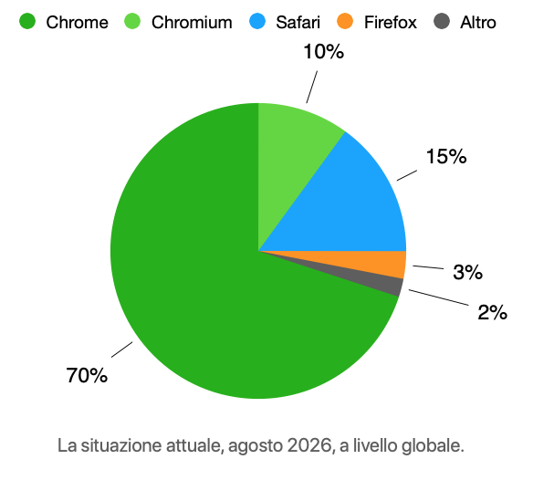
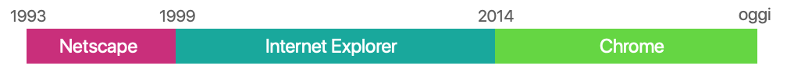
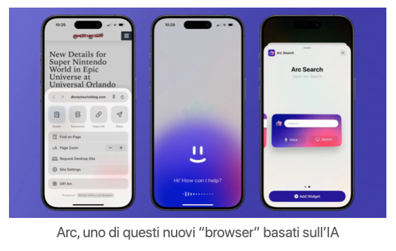

Internet Explorer contro Netscape, Chrome contro tutti ed ora… ChatGPT?? È guerra!
“Non vi preoccupate, torneremo presto a parlare di browser e di estensioni!” scrivevo nello scorso numero di NewsFromTheWeb. Ed eccoci qua.
Come già visto, i browser sono quei programmi che consentono ai nostri dispositivi di ricostruire e far funzionare le pagine web, di mostrarci una grafica, di poterci interagire. E, come già detto, per molte persone il browser di riferimento, al giorno d’oggi, è Google Chrome.
Da solo, Chrome detiene oltre il 70% del mercato globale dei browser; anzi supera l’80%, se si considera che un’altra fetta è rappresentata dai browser basati su Chromium: semplificando molto, si tratta di programmi diversi, con un altro logo, un’altro sviluppatore, un’altra “scocca”, ma basati sullo stesso motore, lo stesso di Chrome. Un altro 15% è rappresentato da Safari, ovvero il browser di default di iPhone e Mac, quindi di quel mondo di prodotti Apple che fa un po’ un discorso a sé… E l’elenco è pressoché già finito.
Insomma, per farla breve, abbiamo solo un 5% di effettivi concorrenti di Chrome, la maggior parte dei quali sconosciuti ai più, o utilizzati solo per scopi ultra-specifici. E poi c’è Firefox (lunga vita a Firefox! Ma di questo ne parleremo, magari in un prossimo articolo).

Ecco, basti sapere che non è sempre stato così: la situazione in cui ci troviamo, questo status-quo, è in essere da poco più di 10 anni, perché prima ci sono stati altri due periodi caratterizzati da altri due (di fatto) monopoli, terminati bruscamente con altrettante guerre. Stiamo parlando della Prima e della Seconda Guerra dei Browser.
Nel 1992 non c’era Internet, dal ’93 al ’97 Internet era di pochi, e quei pochi usavano tutti Mosaic prima e Netscape poi (stiamo considerando questi due browser come un’unico blocco, dato che furono entrambi creati praticamente dalle stesse due persone, e che uno era la diretta derivazione dell’altro). Quindi, nei primi 3 anni di Internet, la quota di mercato di Mosaic/Netscape superava ampiamente il 90% e le alternative di fatto erano inesistenti.
Poi, nel 1996, arrivò la Microsoft che, fiutando il ricco bottino (e dominando già il mercato dei sistemi operativi), si mosse in modo sporco e scaltro, in quella che sarebbe poi divenuta nota come la "Prima Guerra dei Browser". In pratica, l’azienda di Bill Gates si comprò una licenza da quelli che avevano sviluppato Mosaic, si costruì il suo programma basandosi su quegli stessi standard e lo incluse in ogni copia di Windows95, facendolo trovare già installato a chiunque avesse acquistato un computer da lì in avanti.
I consumatori, vuoi per comodità, vuoi per pigrizia, non si preoccuparono di installare un altro browser sulle proprie macchine e finirono per utilizzare in massa il nuovo prodotto di Microsoft: Internet Explorer.
Prima ancora che scoccasse la mezzanotte del 2000, la guerra era già conclusa, con percentuali praticamente ribaltate rispetto a tre anni prima (90% contro meno del 10%).

Certo, a livello legale fu chiaro fin da subito, con cause conclusesi già nel 1996, che questo plebiscito era frutto di una mossa scorretta ed illecita, più che di un effettivo avanzamento tecnologico, ma immagino che in Microsoft avessero fatto i loro conti ben prima di imbarcarsi nella campagna militare, ritenendo che pagare la ridicola multa e un team di bravi avvocati valesse la candela. Ed avevano ragione, perché per 13 anni la candela del monopolio avrebbe continuato ad illuminare i loro bilanci. E forse avrebbe proseguito ancora, se non si fosse affacciato “alla finestra” un nuovo sfidante, pronto a dare battaglia. Ovviamente stiamo parlando della Seconda Guerra dei Browser, ed ovviamente stiamo parlando di Google.
Già monopolista da anni con il suo motore di ricerca, ad un certo punto (diciamo intorno al 2013, anno più anno meno) Google si è messa a spammare ovunque il suo browser “Google Chrome”, proponendone l’installazione ad ogni ricerca effettuata sulla iconica barra, a qualsiasi utente, ovunque. Ha funzionato, e pure abbastanza in fretta, dato che il sorpasso è avvenuto nel giro di pochi mesi: già dalla seconda metà del 2016 Chrome aveva conquistato la maggioranza del mercato, per attestarsi nei due anni seguenti alle percentuali ancora attuali, superiori all’80%, descritte in apertura di questo articolo (e relegando il rivale Internet Explorer all’oblìo e alla dismissione da parte della stessa Microsoft nel 2021).
Possiamo intravedere in questi movimenti del mercato una sorta di schema riconoscibile: l’azienda o il programma leader del momento che sottovaluta i concorrenti o non riesce a stare al passo con le novità, un nuovo sfidante che si propone e che, tramite sotterfugi decisamente scorretti, riesce rapidamente ad imporsi come monopolista con cifre da capogiro. Immagino avrete capito, a questo punto, che ai piani alti di Google non possono starsene con le mani in mano, considerando quanto in fretta potrebbero perdere la leadership; ed ovviamente lo sanno bene anche loro. Infatti, quando qualche anno fa è sbucato fuori, apparentemente dal nulla, ChatGPT e la gente ha iniziato a chiedere ai chatbot ciò che in precedenza cercava su Google, ovviamente i dirigenti della compagnia si sono messi le mani nei capelli. Pare sia stato emesso una sorta di codice rosso interno al colosso, affrettando lo sviluppo dell’IA di Google, quella che ora chiamiamo Gemini e che potete osservare in azione (oltre che tramite l’app dedicata) proprio cercando sulla barra di Google una qualsiasi domanda. Il messaggio è piuttosto chiaro: “vi prego, non usate ChatGPT al posto delle tradizionali ricerche via browser, usate direttamente il nostro browser e vi promettiamo di infilare la stessa pletora di allucinazioni, elenchi puntati ed altre amenità e cazzate che l’IA potrà mai partorire”. Ma pare che stia funzionando a metà, ed ovviamente c’è già chi parla di Terza Guerra dei Browser, anche se in questo caso il concorrente non è nemmeno un browser, bensì un cambio di paradigma molto più radicale. Anche perché nel frattempo le IA si sono moltiplicate, sono apparsi numerosi “browser” basati sull’Intelligenza artificiale invece che sulle ricerche e la gente si è messa a chiedere qualsiasi cosa all’IA di Meta direttamente su WhatsApp, come se chattasse con un amico tuttologo (ma anche un po’ imbecille). Insomma, viste le premesse, per i browser questa terza guerra potrebbe anche essere l’ultima.
